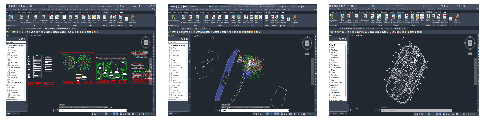
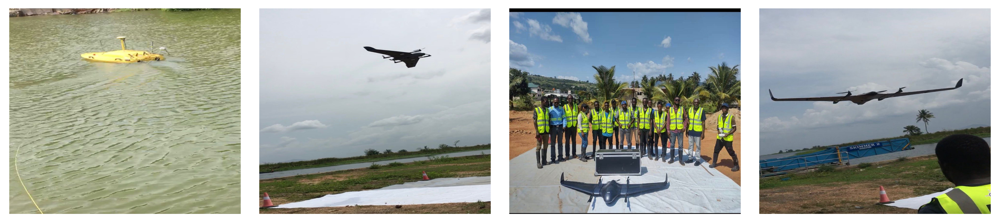

Professional Experience
Gold Processing Plant Refurbishment & Construction at Northern Ashanti Mine (NAM)
At Mac Partners Mining and Construction, I played an active role in the construction of a gold processing plant at Northern Ashanti Mine (NAM). My responsibilities went beyond field surveying, including reading and interpreting engineering and site plans, coordinating with site engineers, and inspecting operations alongside mine surveyors to ensure alignment with design specifications. In the field, I set out tower cranes, CIL tanks, and ball mills using Stonex Total Station and Hi-Target GNSS, and established anchor bolt positions for major structural components to guarantee precise installation. I verified excavation levels using a Bosch dumpy level, optimizing cut-and-fill operations, and re-established survey control pillars to maintain the accuracy and integrity of site measurements. Through this combination of fieldwork, technical analysis, and collaboration, I contributed to the efficiency and safety of mining operations, ensuring construction activities adhered to approved plans while maintaining spatial accuracy across the site.
Tools & Technologies
South total station, Stonex R35 total station,Sokkia 530r total station, Hi-Target V300 GNSS, Bosch dumpy level, AutoCad Civil 3D, MapInfo
Field Operations
Office plots

Topographic & Construction Surveying for Building and Road Projects
During my time at Point Engineering, I contributed to a variety of building, road, and irrigation farm surveying projects, working closely with the lead consultant surveyor and engaging in every step of the surveying process. On building projects, I carefully reviewed points set by contractor surveyors to ensure their accuracy and confirm that layouts matched the approved designs. For road networks and irrigation farm layouts, I collected precise topographic data using Trimble, Sokkia, and CHCNAV GNSS equipment, setting out reinforcement positions, column locations, base points, and road alignments while making sure all work met engineering specifications. I also surveyed and profiled a 14 km road corridor, generating longitudinal and cross-sectional data essential for design and planning. Beyond fieldwork, I collaborated closely with engineers and project managers to interpret survey results, resolve discrepancies, and produce detailed maps, reports, and visualizations that helped guide construction and infrastructure development.
Tools & Technologies
Trimble total station, Trimble GPS, Sokkia 530r total station, CHC NAV GPS, AutoCad Civil 3D
Fieldworks

Drone Mapping & Cadastral/Topographical Surveys
Contributions at AM Surveys Ltd involved a range of survey and mapping projects that integrated drone-based imagery, topographical surveys, cadastral work, and GIS analysis. Operating the Delta Quad drone, I collected high-resolution aerial imagery to monitor waterbody conditions and mapped aquatic vegetation using Picterra software, generating actionable data for environmental assessments. I also performed cadastral and topographical surveys, creating accurate plots in AutoCAD and conducting spatial analysis in QGIS to support land management and client deliverables. Beyond these projects, I assisted with general mapping and field data collection, ensuring survey outputs were precise, well-documented, and reliable.
Tools and Technologies
Delta Quad drone, Picterra software, AutoCAD Civil 3D, QGIS, MapInfo, , Hi-Target GPS, E-Survey GPS
Fieldworks
